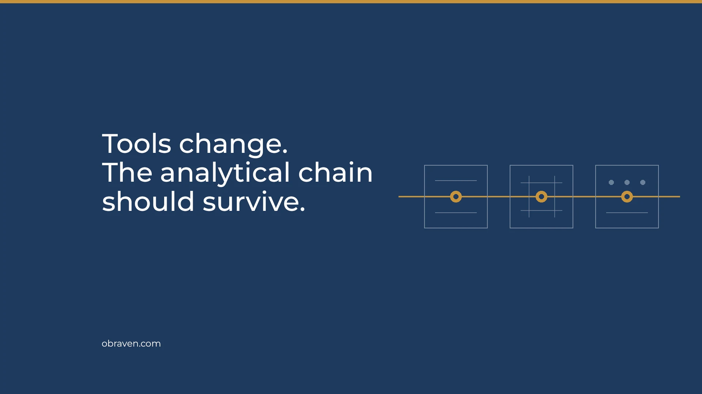

An independent wind analysis practice, where the senior analyst does the work.
OBRAVEN Limited is an Ireland-registered wind analysis and advisory company working with developers, owners, investors, and advisory teams in Ireland and internationally.
Deliberately focused
Measurement strategy, wind resource and energy yield analysis, and independent review for onshore and offshore projects worldwide.
Founder-led, with repeatable methods
Built on repeatable methods, traceable outputs, and reusable workflows, so each assignment improves the next without moving senior accountability away from the work.
Independent
No turbines, equipment, software, or data to sell. Independence matters most when a project needs a second view or several specialist inputs reconciled.
Irish company, international work
Registered in Ireland and contracting as the Irish company, for projects in Ireland and internationally, directly or inside a partner team.

Stan Herasymenko
Stan founded OBRAVEN after a career in wind energy analysis that runs from hands-on measurement delivery to global leadership.
At Mainstream Renewable Power he moved from Senior Energy Analyst to Energy Analysis Manager to Global Head of Energy Analysis Group, leading around 20 specialists across Chile, South Africa, the Philippines, Ireland, and Germany. He built the offshore wind energy analysis capability across the US, Canada, the UK, Ireland, Norway, Sweden, Estonia, South Korea, and Australia, and led energy analysis for UK Round 4 and ScotWind.
At DNV, in renewables advisory for Central and Eastern Europe and the Mediterranean, he delivered investment-grade wind and solar resource assessments, technical risk reviews, and technical due diligence for developers and investors.
He began at ENERPARK in Poland, measuring wind and running resource assessments, and went on to lead its wind analysis team: 130+ resource and energy yield assessments across 11 countries, around 230 layout studies, and the supervision of 110+ met masts from installation to decommissioning.
His work covers onshore and offshore wind, plus solar and hybrid projects, in varied wind climates, terrain, data conditions, and financing contexts.
Career experience: 18+ years · 30+ countries · 200+ measurement stations specified or overseen · 300+ assessments delivered or reviewed · 1,000+ layout and turbine scenarios analysed or overseen – all from the founder’s career before OBRAVEN.
- Education
- Executive MBA, UCD Michael Smurfit Graduate Business School (opens in a new tab)
M.Sc. Power Engineering (Renewable Energy), Warsaw University of Technology (opens in a new tab)
B.Sc. Space Engineering, National Aerospace University of Ukraine (opens in a new tab) - Certification and standards
- Project Management Professional (PMP) (opens in a new tab)
IEC TC 88 / WG 15 participation through Ireland - Languages
- Polish, Ukrainian, and Russian – native or bilingual
English – full professional · German – elementary
Publicly announced projects
Stan’s prior-career experience at Mainstream Renewable Power. These are not OBRAVEN delivery projects. OBRAVEN case studies will be added as assignments are completed and clients agree to them being shared.
Mareld – 2.5 GW floating offshore wind farm
Led energy analysis and risk assessment inputs supporting the Natura 2000 permit.
Gippsland Skies – 2.5 GW offshore wind farm
Led energy analysis, layout optimisation, and yield inputs for feasibility-stage decisions. Developer’s announcement (opens in a new tab)
Arven – 1.8 GW offshore wind farm
Led turbine modelling and layout optimisation, shaping the energy yield assessment and bid submission. Project page (opens in a new tab)
Morro Bay and Humboldt – multi-GW floating offshore wind projects
Led the energy analysis workstream for Pacific Wind Lease Sale 1, supporting a joint bid with a JV partner. BOEM lease record (opens in a new tab)
New York Bight – multi-GW offshore wind farm
Led the energy analysis workstream, providing yield estimates and risk assessment inputs for a US$758 million bid. BOEM lease record (opens in a new tab)
Standards, applied to the question
OBRAVEN works to the current standards and industry best practices for wind measurement, resource assessment, energy yield, uncertainty, and bankability, and keeps up with them as they are revised. They include the IEC 61400-15 series (opens in a new tab) on site suitability and energy yield; the IEC 61400-50 series on wind measurement, including IEC 61400-50-2 (opens in a new tab) for ground-mounted remote sensing; MEASNET (opens in a new tab) procedures and the work of IEA Wind Task 52 (opens in a new tab) on wind lidar; and IEC 61400-26-1 (opens in a new tab) on availability.
Stan takes part in IEC TC 88 / WG 15 work through the Irish standards route, mainly reviewing and commenting. This is professional participation; it does not imply IEC endorsement of OBRAVEN or of any deliverable.
Standards are applied according to the project question and intended reliance. Where a method choice or deviation matters, the reason is written down.

When to introduce OBRAVEN
If you know someone facing one of these, an introduction is usually useful to both sides:
- A developer or owner about to commit to a wind measurement campaign
- A project whose energy yield basis no longer matches its layout, turbine, or constraints
- An investor or buyer looking at an inherited yield case before acquisition or financing
- Two energy yield assessments that disagree, and nobody can say why
- An owner’s engineer, advisory, or due diligence team that needs a senior wind-analysis module inside its scope
- A developer or investor growing into wind faster than its in-house energy analysis
OBRAVEN is an Ireland-based independent wind analysis practice founded by Stan Herasymenko, former Global Head of Energy Analysis Group at Mainstream Renewable Power. It provides measurement strategy, wind resource and energy yield analysis, and independent review for onshore and offshore projects. A first engagement can be one defined assignment. obraven.com
OBRAVEN Limited
- Registered
- Ireland · CRO 814152 (opens in a new tab)
VAT IE4730997RH - Registered office
- 107 Viewmount, Rathdrum, Co. Wicklow, A67 AT10, Ireland
- Contact
- hello@obraven.com · Verify a document
Working in Ireland and internationally
Bring one live project question.
Send the project stage and the question ahead, the analysis and data already available, any deadline or project gate, and who will rely on the output.
- Whether OBRAVEN is the right choice
- The narrowest useful scope
- Output, timing, and fee basis
- Reliance and specialist boundaries
A short scoping call should end with a defined next step – or a clear conclusion that further work is not warranted.